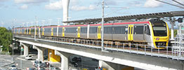
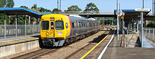

Timetables NSW/ACT North North West NSW Intercity West South Nowra Goulburn Sydney Suburban Bus North Bus West Bus South WA Kalgoorlie Bunbury Perth Suburban Bus TransWA VIC East Albury Seymour / Shepparton Bendigo/ Swan Hill/ Echuca Ballarat/ Ararat/ Maryborough Geelong/ Warrnambool Melbourne Suburban Stony Point Melbourne Trams Bus East Bus North East Bus Goulburn Valley Bus North West Bus West New Zealand Tranz Scenic NorthIsl Tranz Scenic SouthIsl Auckland Suburban Wellington Suburban QLD  Traveltrain Coastal Inlander Spirit Outback Westlander Nambour Brisbane Suburban Others  Main Interstate Train Services Summary GSR Indian Pacific GSR Ghan GSR Overland Adelaide Suburban Guide to NSW TrainLink Services Guide to Great Southern Rail Guide to V/Line Guide to Queensland Rail Travel Guide to TransWA Heritage Railways